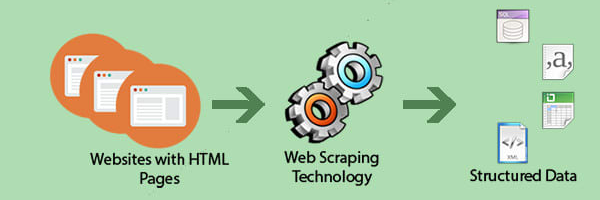

Introduction
We are happy to present you a "cookbook" for Data Scraping, which will help you understand the basics of
the web, how it works and how to get the information you want from it. We will cover all the languages
and tools required for getting started in the world of Data Scraping.
We will start by covering the basic structure of web pages, we will learn HTML, CSS and JavaScript. Then
we will learn Python, this programming language provides a lot of pragmatic tools and packages for
working with data, two of which are Scrapy and Selenium, which we will cover later on.

Over sections it will get more advanced, so we expect you to work on the examples provided here and most
importantly read and play with the resources that are presented at the end of this document.
Don’t worry when things don’t work, try to formulate your problem and Google it, and remember that: The
expert was once a beginner.
So with this in mind let’s get started
Note: Below presented languages/frameworks are written for people who
are
not familiar with those
concepts. If you are familiar with any of those feel free to skip it, otherwise you might find the
descriptions not comprehensive.
Notions
Each “Section” consists of the corresponding “title” at the top, “text” and “code snippets”. Some
sections might contain “Sub-sections” with the appropriate content. At the top corener of concepts
words' you will see indexing like this those index
coressponde to links listed in the “Resources” list, which are located the end of every section. In
these “resources” you will find more information and examples. “Terms”, “expressions”, “methods name” “special names”
will be writeen between these “” quotes.
Texts written in this form, might inform you about something extra
And these sections, might want to make attention